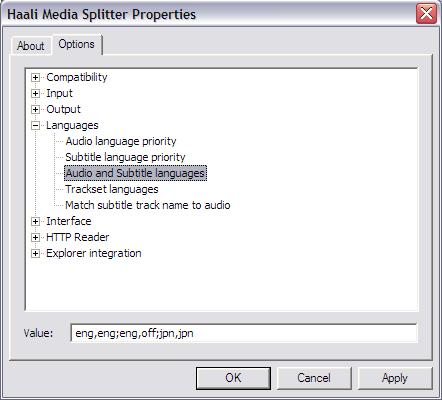

|
- Home
- IRC Rules
- Botlist
- Releases
- FAQ
- Encodes Help
Join our IRC Channel:
Server: irc.rizon.net
Chan: #Exiled-Destiny
|
This page is
meant to help you with our encodes. Last update: March 17th 2007.
--Before anything, make sure to just simply update all your codecs, links at the bottom of the page if needed--
Quick Help To Get Things Working:
One thing to remember, 99% of the problems are individualy
related! We test all files for playback, and even though me make the
occasional mistake (yes we are human!) most problems are related only
to your system...
- Check if the files play in another player other than
your normaly used player. Good ones are directshow compatible like
MediaPlayerClassic, CoreMediaPlayer, Zoom or using a player that has an
internal version of the opensource libavcodec like VLC or Mplayer. (Links to all these players are at the bottom of this page!!)
- If the files play in another DirectShow compatible
player, then something is wrong with your other player! Try
reinstalling it.
- If it only plays in a libavcodec internal player like
VLC or Mplayer, then you have a DirectShow codec issue my friend! Go
down to step 3 and 4 for more instructions...
- CRC Check the file, get RapicCRC here if you don't have a checker.
- The CRC value of a file checks if a file is corrupt
after downloading. This can cause files to either not play, or
play improperly! We provide CRC values in every file we release for
this reason, they are the alphanumeric strings at the end of each
file i.e. ED4B95AE. TIP: This is also a good way to search
for files in the main channel, use @find with a CRC value to find a
specific file, CRC values are unique finger prints to each file :)
- If it is corrupt, DON'T delete it yet! It may be able
to be patched, just ask in the main channel for a patch to the file and
someone might help you.
- If you still don't have a working file, or skipped the above steps, take the time to download the VLC player here and check to see if the file works. If it does, then you definately have a DirectShow codec problem.
- Begin by first re-installing all necessary codecs or codec packs if you use one for play back (like CCCP). FFDShow here or CoreAVC here (not free, but is the best) for video play back. FFDShow also has audio playback, but if wanted you can get AC3Filter here for an alternative to AC3 audio decoding. Lastly, DirectVobSub is needed for subtitle playback, get it here. You also need a Matroska Splitter, Haali comes to mind from here.
- ****It is my personal recommendation to NOT simply reinstall these codecs over your existing codecs.
I STRONGLY advice you to uninstall each one, or the codec pack used,
and RESTART your PC. Then, install each codec, or codec pack, starting
with FFDShow/CoreAVC, AC3Filter (if using) DirectVobSub (VSFilter)
and then Haali media splitter. This will ensure a clean re-install and
has the highest rate of success. Also, if you want a true smooth
re-install, then un-install all codecs on your system that you can find
in the Add/Remove Programs window, XviD and any other installed ones
that you can find, restart, and install only the needed codecs/splitter
to run the files.
- If after this you still can not get the file to work,
then something out of the ordinary is wrong, and you can now take it to
the main channel and ask.
- **Remember to be nice, patient and say that you have gone though our little guide here (otherwise
you will get a boot to this page). I can not give an end-all to all
situations here, but the above will fix 99% of the problems you will
have.
- Also remember, if all else fails and it seems not even
Jesus could get the file to play on your system, then there is always a
nice clean fresh OS reinstall that can do the trick. Our systems become
raped and used over the time we use them, and can become overly
cluttered to the point where they just don't work anymore. If all else
fails, this may be your only answer, but of course only as a last
resort.
Some Things You Should Know About Our Encodes:
- Our encodes are provided in the Highest Quality Possible, relating to the R1/R2 DVD Quality
- With the majority of people now owning DVD burners, it's
time to get with the times. 340MB encodes provide a better fit to DVD-R
disc, so you don't have to mis-match files as much. We can also provide
higher quality video, and direct DVD audio using the AC3 tracks.
- Not all encodes include text based subs, only recently as
of Feb. 07 have we begun to add SSA/ASS/SRT subs. All of our releases
do include VobSub subtitles, which are direct from DVD subtitles.
- We use H.264 MPEG4 AVC video encoding, for the Highest
Quality video around. This is a more demanding video though, so realize
atleast a 1.3ghz recent generation cpu is needed for full playback.
- We also use VFR (Variable Frame Rate) video to provide
smooth video. To properly facilliate all the above, we use the MKV
container from the Matroska project.
- Audio is labeled within the container partaining to their
language or origin. Subtitles are labeled according to the relative
Audio track that they go with. This is NOT the language that the
subtitle track is in. We do this for a few reasons, but one reason is
that Haali can be used to auto load Audio and Subtitles based on their
container lablels. A picture below is provided to show this:

You can get the Haali Media Splitter configuration by double clicking
the Haali tray icon when playing a file, located in your system tray.
Or by going to Programs > Haali Media Splitter > Media Splitter
Settings. Either will get you the above window. Go to the location
shown above and you can configure the settings of which Audio and
Subtitle tracks are taken priority or loaded first with each other. In
the above example, Haali will attempt to load audio labeled as
eng(English) and subtitles labeled with eng(English). If not, it will
attempt to load eng(English) audio and No subtitles (off), lastly it
will load jpn(Japanese) audio and jpn(Japanese) subtitles. This is
where you can see how we label our encodes comes in use. If you are a
pretty strict Dub or Sub anime watcher, you can make it default to
either English Audio with only OP/ED and sign subtitles (eng,eng), or
Japanese Audio with the matching English translated subtitle track
(jpn,jpn).
Useful Links:
Here I am
putting the links to everything you can imagine about our encodes. Its
linkage dude....
Encoding
Guides, Tips and General Resources-
http://www.doom9.org
- The Ultimate Resourse Site.
http://www.x264.nl/
- Home to the X264 project that we use. (also contains best builds of
ffdshow, ect.)
http://www.matroska.org/
- Home to the Matroska project, container of choice in our group.
http://www.vorbis.com/
- Home of our Audio codec of choice.
http://forum.doom9.org/showthread.php?t=96059
- Complete explination on MPEG4 AVC (H.264)
http://rapidcrc.sourceforge.net/
- RapidCRC, a way to check the CRC value within the filename for a
corrupt file
Things needed
to get working -
http://www.free-codecs.com/download/FFDShow.htm- FFDShow. An All-In-One Video and Audio DirectShow codec set.
http://www.coreavc.com/ - CoreAVC. The fastest most efficient H.264 decoder to date. It is not free though.
http://haali.cs.msu.ru/mkv/
- Splitter of choice for matroska and ogm files.
http://www.free-codecs.com/download/DirectVobSub.htm
- Place to get up-to-date DirectVobSub
Players -
http://www.free-codecs.com/download/Media_Player_Classic.htm
- Get latest Media Player Classic.
http://www.corecoded.com/
- Home to my personal favorite, Core Media Player.
If you are
having Sync issues, or shuddering, slowness in play back, try these:
NOTE: These players do NOT depend on ffdshow,Haali,or others to play
files.
http://www.videolan.org/
- Home to VLC Player, an excelent player for both Windows and Linux
http://ftp5.mplayerhq.hu/mplayer/releases/win32/
- Windows Build of MPlayer (Linux player of choice)
|